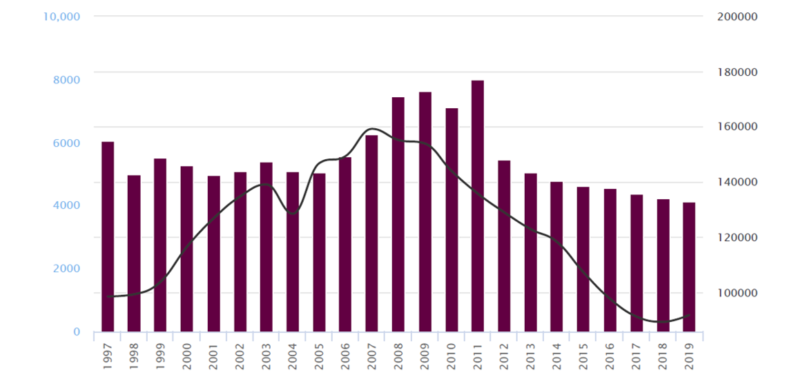

Cifras
Accidentes de tránsito
Accidentes de tránsito en zonas urbanas y suburbanas de México
Fuente: INEGI Estadística de accidentes de tránsito terrestre en zonas urbanas y suburbanas.
Total de víctimas de accidentes de tránsito en zonas urbanas y suburbanas de México
Fuente: INEGI Estadística de accidentes de tránsito terrestre en zonas urbanas y suburbanas.
Accidentes de tránsito por entidad federativa

Fuente: INEGI Estadística de accidentes de tránsito terrestre en zonas urbanas y suburbanas.
Accidentes de tránsito terrestre en el estado de Oaxaca
Fuente: INEGI Estadística de accidentes de tránsito terrestre en zonas urbanas y suburbanas.
Víctimas muertas en los accidentes de tránsito en Oaxaca
Fuente: INEGI Estadística de accidentes de tránsito terrestre en zonas urbanas y suburbanas.
Víctimas heridas en los accidentes de tránsito en Oaxaca
Fuente: INEGI Estadística de accidentes de tránsito terrestre en zonas urbanas y suburbanas.
Medidas preventivas
¿Cómo prevenir los accidentes de tránsito?
Evitar distracciones como llamadas telefonicas, conversaciones con los pasajeros o mirar rutas para conducir.
No consumir alcohol: es la mayor causa de muertes por accidentes de tráfico.
Cuidado con el consumo de medicamentos: algunos pueden afectar la atención y los reflejos.
No consumir drogas: alteran la capacidad mental y física del individuo.
Evitar la fatiga: no conducir durante tiempos prolongados.
Respetar las normas de conducción y tráfico. Respetar los límites de velocidad es muy importante.
Cuidado con las condiciones meteorológicas adversas: como lluvia, nieve, neblina.
Revisar el vehículo antes de salir de viaje. Es necesario comprobar el buen estado del automóvil.
No utilizar el celular al volante: en cualquiera de sus funciones, es altamente inseguro y puede ocasionar accidentes.
Usar el Sistema de Retención Infantil (SRI) adecuado.Los niños deben contar con un SRI adecuado para su edad.
Usar el cinturón de seguridad. Una persona que en un accidente es despedida de su auto tiene cinco veces más probabilidades de morir.
Realiza un mantenimiento preventivo a tu auto. Siempre es importante que le eches un vistazo profundo a tu auto.

El peatón encabeza la pirámide de movilidad, respetemos esto para garantizar una convivencia armónica en la vía pública. La cultural vial es responsabilidad de todas y todos.
Un casco de buena calidad puede protegerte de accidentes mortales.
Peatones, los más vulnerables
La vulnerabilidad de los peatones es un hecho sabido. En un choque entre un vehículo, aún el más liviano, y un peatón, este último es el que, con mayor probabilidad, se llevará la peor parte. Cruzar o caminar distraídos, no respetar las señales del semáforo, jugar en la calle, cruzar por cualquier parte, caminar por la calle, cruzar con las barreras bajas, etc. son algunos de los comportamientos de riesgo que solemos realizar sin pensar en las consecuencias.
Motos y bicicletas
En el caso de las motos y bicicletas: luces, elementos reflectantes y casco son los principales dispositivos a verificar antes de subirse al vehículo, además de tener especial cuidado a las reglas de tránsito en general, ya que los conductores de motocicletas tienen 15 veces más probabilidad de morir en accidentes de tránsito que los ocupantes de un auto.
Evita comportamientos riesgosos
Sugerencias por el Consejo Estatal para la Prevención de los Accidentes (COEPRA)
En México se registró que los fines de semana se movilizan alrededor de 200 mil conductores bajo influencia de alcohol.
Fuente: Consejo Estatal para la Prevención de los Accidentes
¡La velocidad no es tu mejor amiga! Ser joven no es sinónimo de ponerse en riesgo. Evita cualquier tipo de distraccion.
Fuente: Consejo Estatal para la Prevención de los Accidentes
Cada año, los accidentes de tránsito causan la muerte de aproximadamente 1,3 millones de personas en todo el mundo.
Fuente: Consejo Estatal para la Prevención de los Accidentes
Los demás conductores no son tu competencia. Respeta los límites de velocidad y señales de tránsito. ¡No pongas en riesgo tu vida o la de otros!
Fuente: Consejo Estatal para la Prevención de los Accidentes
En México, más de 16 mil personas mueren por accidentes de tránsito cada año, representando la segunda causa de muerte en jóvenes entre 5 y 29 años de edad.

Fuente: Consejo Estatal para la Prevención de los Accidentes
Un conductor responsable sabe que requiere todos sus sentidos al 100% a la hora de conducir. Dile no a las distracciones, podrías causar un accidente.